dispatch
Case study · self-initiated concept
One screen for every rider, every order.
An operations dashboard for delivery companies in Lagos. Built as a full Figma file, with every state and every tap prototyped.

The brief I set
A dispatcher has seconds, not minutes.
I wanted to design a dashboard someone runs a business from, not a gallery of charts. Delivery in Lagos gave me a real world to design for: riders on the road, orders running late, cash collected on delivery and customers calling to complain.
This is a concept. I have not interviewed dispatchers yet, so the questions below are my own working assumptions. I designed every screen to answer one of them quickly. All names, orders and amounts in the screens are sample data.
- Question 1What is late right now?
Overview puts late orders above the fold, with minutes late in plain text.
- Question 2Where is each rider?
Live map pairs a rider list with the map, so a name and a pin are one tap apart.
- Question 3Who is holding cash?
Payouts separates pay runs from cash riders still owe.
- Question 4Who is unhappy?
Complaints sit in the sidebar with a live count, next to Orders.
Decision 1 · Colour
Lagos already has a brand colour on the road.
My first version was navy and crimson. It looked like every other SaaS dashboard, and I could swap the logo for any company's.
I replaced it with danfo yellow and charcoal. Yellow is used only where attention should land: the primary button, the peak hour in a chart, the selected rider. Everything else stays neutral, so yellow means something.
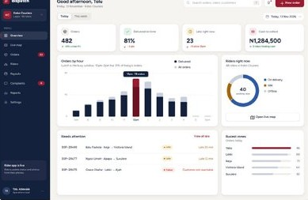
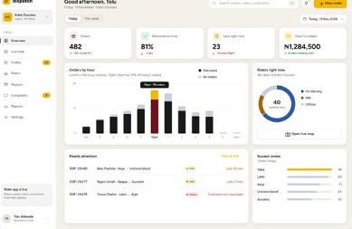
- Danfo
#F5B800 - Charcoal
#1A1A17 - Paper
#F3F1EA - Line
#E4E0D6 - Success
#1E7F4F - Warning
#B45309 - Error
#D92D20 - Info
#2D5BA8
Decision 2 · Live map
Find the rider, then act.
Select a rider and a card opens with their current order, how late it is and two buttons: view the order or reassign it.
Filters (On delivery, Idle, Offline) show their counts, so the list answers "how many are free?" before anyone scrolls.
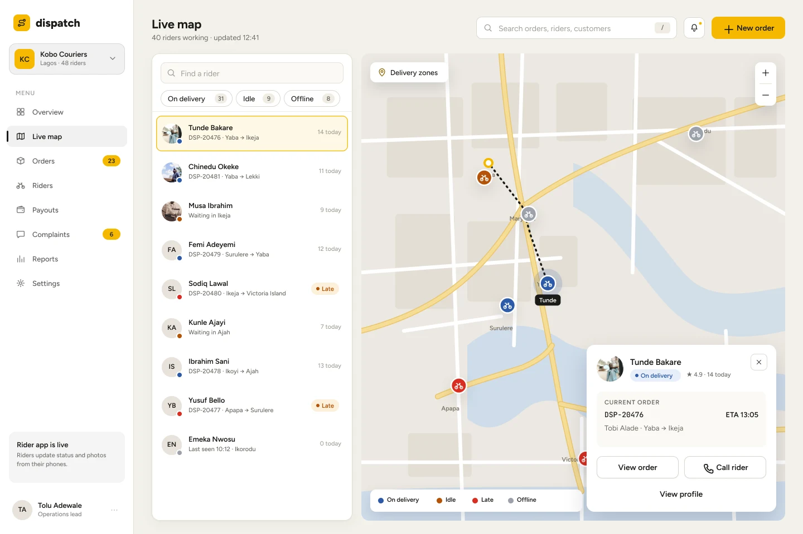
Decision 3 · Order detail
Tell the dispatcher what to do next.
When an order is late, the page opens with a yellow banner in plain words: the rider is 25 minutes late and has not moved for 9 minutes. Reassign or call them.
The primary action is the yellow button. Calling the rider and cancelling sit below it as quieter options. Reassigning opens a short list of nearby riders with distance and rating, then a confirmation, then a success state.
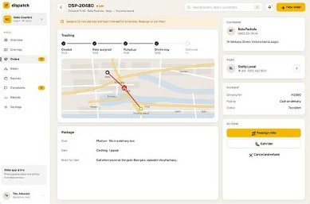
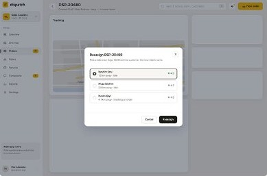
Decision 4 · Lists and people
Tables for work, profiles for people.
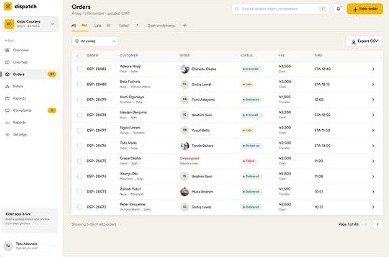
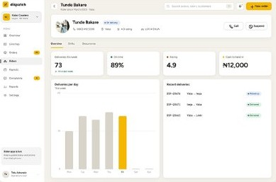
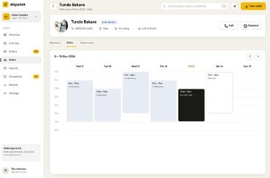
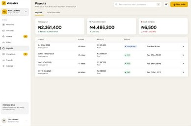
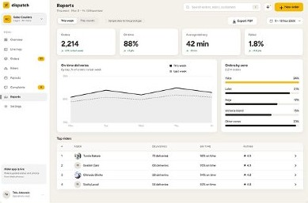
Decision 5 · Reading numbers
Every number says what changed.
Each KPI carries its change next to it, such as "+8% vs last Fri" or "−3 pts", with colour only on what is worse or better.
Charts use charcoal as the base and yellow for the one bar or line that matters. Axes and gridlines stay quiet.
System
One typeface, one accent, a small kit.
Figtree for everything people read. A monospaced face for order IDs such as DSP-20480, so they are easy to compare and copy.
Buttons exist in five states: default, hover, pressed, disabled and loading. Toggles, checkboxes and the star that pins a rider are interactive components in the prototype.
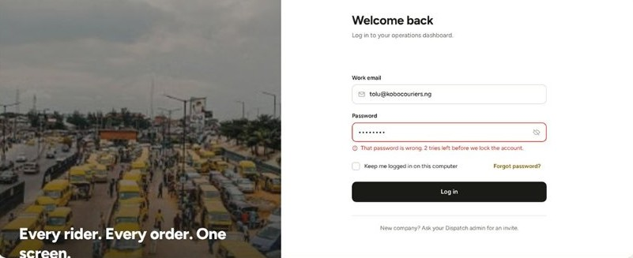
The file
Built to be clicked, not just looked at.
- 482
- screens and states
- 12
- flows with start points
- 137
- components
- 23
- component sets
- 0
- tappable items without a link in my final check
- Log in
- Overview
- Live map
- Orders
- New order
- Riders
- Payouts and cash
- Complaints
- Reports
- Settings
- New workspace (empty)
- Offline
The file also has the full structure: Get Started, Dev Handoff, Inspect, Design System (Foundation, Component, Patterns), Usability Testing / Prototype, Archive, Portfolio and Trash.
Click through the prototype ↗What I would do next
Put it in front of real dispatchers.
Everything here rests on my own assumptions. The next step is to test them.
- Test
Run the usability test plan that is already in the file, with people who dispatch deliveries.
- Ask
Check whether the four questions are the right ones, and what I missed.
- Build
Design the rider's phone app, since the dashboard depends on what riders send back.